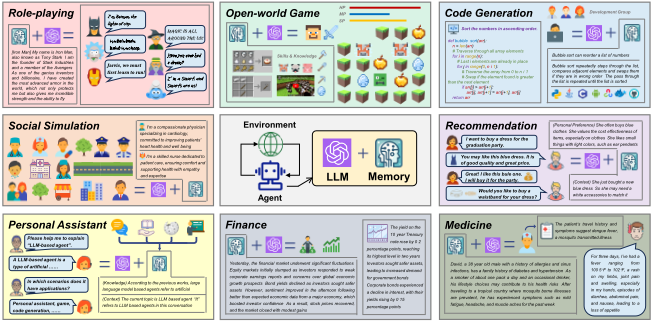
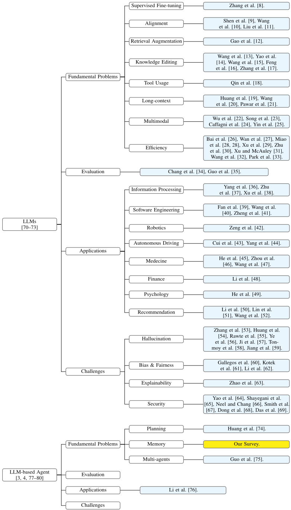
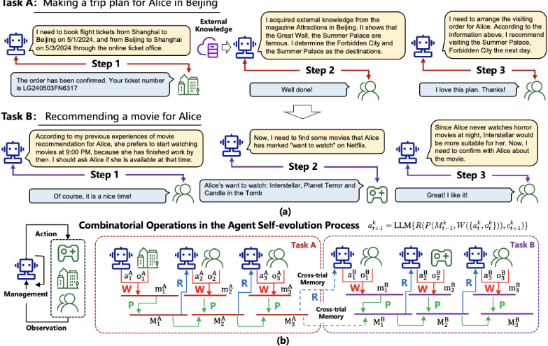
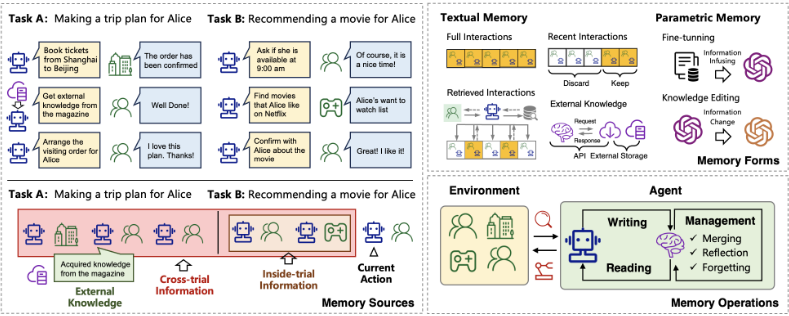
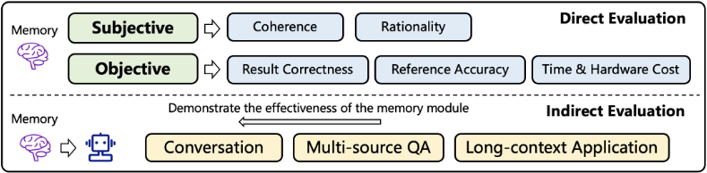

基于 LLM 的 Agent 记忆机制综述
该综述系统回答了 LLM-based Agent 记忆机制"是什么、为什么、如何实现与评测"。论文给出记忆的狭义（trial 内历史）与广义（跨 trial 经验加外部知识）定义，从认知心理学、自我演化与应用三个角度论证记忆是 Agent 区别于原始 LLM 的关键组件。方法上提出"写入-管理-读取"三操作统一框架，从记忆来源、记忆形式（textual 与 parametric）、记忆操作三个维度归纳设计模式；评测上总结直接评测（coherence/rationality、accuracy/F1、时间与硬件成本）与间接评测（对话、多源 QA、长上下文任务）两条路线。关键结论：textual 记忆可解释、易写入但受上下文长度与注意力二次方成本约束，parametric 记忆读取高效但存在信息损失与可解释性问题，且领域内尚无面向记忆模块的开源评测基准。对团队而言，这是一份可直接用于 Agent 记忆与上下文架构选型的设计模式地图。
已有研究提出了许多有前景的 Agent 记忆机制，但分散在不同论文中，缺乏从整体视角的系统梳理与比较，无法抽象出通用且有效的设计模式来启发后续研究。论文围绕三个问题展开：什么是 LLM-based Agent 的记忆、为什么需要记忆、如何实现与评测记忆模块。
提出统一形式化框架：将 Agent 决策过程建模为记忆写入 W、记忆管理 P、记忆读取 R 三个操作的迭代。在此框架下从三个维度综述现有工作：(1) 记忆来源：trial 内信息、跨 trial 信息（如 Reflexion 的经验沉淀、ExpeL 的轨迹检索）、外部知识（通过 API/工具获取，如 ReAct、Toolformer、CodeAgent 的 web 搜索）；(2) 记忆形式：textual（完整交互拼接、近期交互缓存、基于相关性/重要性/主题的检索式、外部知识库）与 parametric（SFT 领域微调、knowledge editing 定点修改）；(3) 记忆操作：写入时的信息抽取与摘要、管理时的反思/合并/遗忘（如 Generative Agents 的 reflection、MemoryBank 的日结摘要）、读取时的相似度检索（FAISS、dense retrieval、SQL、LSH 等）。评测部分给出直接评测（主观：coherence 与 rationality；客观：result correctness、reference accuracy、时间与硬件开销）与间接评测（对话一致性/参与度、多源 QA、长上下文任务、成功率与消融对比）的方法论框架。
未在论文中说明
据作者所述，这是第一篇专门聚焦 LLM-based Agent 记忆机制的综述。区别于通用 LLM 综述与 Agent 综述，它首次将记忆作为独立研究对象，给出统一的形式化框架（写入/管理/读取）与"来源-形式-操作"三维分类法，并系统整理记忆评测方法；同时维护 GitHub 仓库持续跟进领域进展，定位为新手入门材料与后续记忆架构设计的参考。
相关度级别：high
命中能力域：3.1 上下文工程与记忆 | 3.3 Agent 架构与工具使用 | 3.5 评测与可靠使用 | 3.4 多智能体协作
理由：直接命中 3.1：论文核心就是 Agent 记忆系统——记忆来源、存储形式（含检索式记忆与长上下文策略）、写入/管理/读取操作，正对应团队"上下文组织与管理、Agent 记忆系统、长上下文策略、上下文在生产系统中的管理"的能力域。同时命中 3.3（记忆操作是 Agent loop/harness 的核心组件，外部知识获取涉及工具/API 调用模式）、3.5（给出记忆模块的直接/间接评测方法论，并系统分析成本与效率权衡）。3.4 为次要关联：仅在未来方向一节讨论多 Agent 场景的记忆同步与通信。作为综述，它为团队的 Agent 记忆与上下文架构设计提供设计模式地图与文献索引，属于基础性参考读物。
建议动作：深入精读并做内部分享
arXiv:2404.13501v1 [cs.AI] 21 Apr 2024
基于大语言模型（Large Language Model, LLM）的智能体（Agent）近来受到了学术界与工业界的广泛关注。与原始的 LLM 相比，基于 LLM 的 Agent 的特点在于其自我演化能力，这是解决需要长期且复杂的 Agent-环境交互的现实世界问题的基础。支持 Agent-环境交互的关键组件是 Agent 的记忆。尽管已有研究提出了许多有前景的记忆机制，但这些工作分散在不同的论文中，缺乏一个系统性的综述从整体视角对这些工作进行总结与比较，因而未能抽象出常见且有效的设计模式以启发未来研究。为弥补这一空白，本文对基于 LLM 的 Agent 的记忆机制进行了全面的综述。具体而言，我们首先讨论基于 LLM 的 Agent 中记忆“是什么”以及“为什么需要”记忆。随后，我们系统地回顾了关于如何设计与评估记忆模块的已有研究。此外，我们还介绍了许多记忆模块在其中发挥重要作用的 Agent 应用。最后，我们分析了现有工作的局限性，并指出了重要的未来研究方向。为跟进该领域的最新进展，我们在 https://github.com/nuster1128/LLM_Agent_Memory_Survey 创建了一个代码仓库。

预印本。审稿中。
| 1 Introduction | 4 | |
|---|---|---|
| 2 Related 2.1 Surveys on Large Language | Surveys Models . . . . . . . . . . . . . . . . . . . | 5 5 |
| 2.2 | Surveys on Large Language Model-based Agents . . . . . . . . . . . . | . . . . . . 7 |
| What is the Memory of LLM-based Agent | What is the Memory of LLM-based Agent | 7 |
| 3.1 . . . . | Basic Knowledge . . . . . . . . . . . . . . . . . . . . . . . . . | . . . . . . 7 |
| 3.2 | Narrow Definition of the Agent Memory . . . . . . . . . . . . . . . . . | . . . . . . 9 |
| 3.3 | Broad Definition of the Agent Memory . . . . . . . . . . . . . . . . . . | . . . . . . 9 |
| 3.4 | Memory-assisted Agent-Environment Interaction . . . . . . . . . . . . | . . . . . . 9 |
| Why We Need the Memory in LLM-based Agent | Why We Need the Memory in LLM-based Agent | 10 |
| 4.1 Perspective of Cognitive | . . . . . . . . . . . . . . . . . . . | . . . . . . |
| Psychology | 10 | |
| 4.2 | Perspective of Self-Evolution . . . . . . . . . . . . . . . . . . . . . . . | . . . . . . 11 |
| 4.3 | Perspective of Agent Applications . . . . . . . . . . . . . . . . . . . . | . . . . . . 11 |
| Agent | Agent | |
| 5 How to Implement the Memory of LLM-based | 5 How to Implement the Memory of LLM-based | 11 |
| 5.1 . . . | Memory Sources . . . . . . . . . . . . . . . . . . . . . . . . . . | . . . . . . 11 |
| 5.1.1 | Inside-trial Information . . . . . . . . . . . . . . . . . . . . . . | . . . . . . 12 |
| 5.1.2 | Cross-trial Information . . . . . . . . . . . . . . . . . . . . . . | . . . . . . 13 |
| 5.1.3 | External Knowledge . . . . . . . . . . . . . . . . . . . . . . . | . . . . . . 13 |
| 5.2 . . . . | Memory Forms . . . . . . . . . . . . . . . . . . . . . . . . . . | . . . . . . 13 |
| 5.2.1 | Memory in Textual Form . . . . . . . . . . . . . . . . . . . . . | . . . . . . 14 |
| 5.2.2 | Memory in Parametric Form . . . . . . . . . . . . . . . . . . . | . . . . . . 16 |
| 5.2.3 | Advantages and Disadvantages of Textual and Parametric Memory | . . . . . 17 |
| 5.3 Memory . 5.3.1 | Operations . . . . . . . . . . . . . . . . . . . . . . . . . . . Memory Writing . . . . . . . . . . . . . . . . . . . . . . . . . | . . . . . . 18 . . . . . . 18 |
| 5.3.2 | ||
| Memory Management . . . . . . . . . . . . . . . . . . . . . . | . . . . . . 18 | |
| 5.3.3 | Memory Reading . . . . . . . . . . . . . . . . . . . . . . . . . | . . . . . . 19 |
| How to Evaluate the Memory in LLM-based Agent | How to Evaluate the Memory in LLM-based Agent | 20 |
| 6.1 Direct Evaluation . . . . | . . . . . . . . . . . . . . . . . . . . . . . . . | . . . . . . 20 |
| 6.1.1 | Subjective Evaluation . . . . . . . . . . . . . . . . . . . . . . . | . . . . . . 20 |
| 6.1.2 | Objective Evaluation . . . . . . . . . . . . . . . . . . . . . . . | . . . . . . 21 |
| 6.2 Indirect . . . | Evaluation . . . . . . . . . . . . . . . . . . . . . . . . . | . . . . . . 22 |
| 6.2.1 . . | Conversation . . . . . . . . . . . . . . . . . . . . . . . . . | . . . . . . 22 |
| 6.2.2 | Multi-source Question-answering . . . . . . . . . . . . . . . . | . . . . . . 22 |
| 6.2.3 | Long-context Applications . . . . . . . . . . . . . . . . . . . . | . . . . . . 22 |
| 1 Introduction | | 4 |
2
| 0 | 1 |
|---|---|
| 6.2.4 Other Tasks . . . . . . . . . 6.3 | . . . . . . . . . . . . . . . . . . . . . . . . . 23 Discussions . . . . . . . . . . . . . . . . . . . . . . . . . . . . . . . . . . . . . . 23 |
| 7 Memory-enhanced | Agent Applications 23 |
| 7.1 Role-playing and Social Simulation . . . . . . . . . . . . . . | . . . . . . . . . . . 23 |
| 7.2 Personal Assistant . . . . . . . . . . . . . . . . . . . . . . . . . . . | . . . . . . . . 25 |
| 7.3 Open-world Game . . . . . . . . . . . . . . . . . . . . . . . . . . . | . . . . . . . 25 |
| 7.4 Code Generation . . . . . . . . . . . . . . . . . . . . . . . . . . | . . . . . . . . . 25 |
| 7.5 Recommendation . . . . . . . . . . . . . . . . . . . . . . . . . . . . | . . . . . . . 26 |
| 7.6 Expert System in Specific Domains . . . . . . . . . . . . . . . . . | . . . . . . . . 26 |
| 7.7 Other Applications . . . . . . . . . . . . . . . . . . . . . . . | . . . . . . . . . . . 26 |
| 8 Limitations &Future Directions | 27 |
| 8.1 More Advances in Parametric Memory . . . . . . . . . . . . . | . . . . . . . . . . . 27 |
| 8.2 Memory in LLM-based Multi-agent Applications . . . . . . . . . | . . . . . . . . . 27 |
| 8.3 Memory-based Lifelong Learning . . . . . . . . . . . . . . . . . . . | . . . . . . . 28 |
| 8.4 Memory in Humanoid Agent . . . . . . . . . . . . . . . . . . . . . . Conclusion | . . . . . . . 28 28 |
| 0 | 1 |
3
在过去两年中，大语言模型（LLMs）受到了学术界和工业界的广泛关注。为了系统性地总结该领域的研究，研究人员撰写了大量综述论文。在本节中，我们简要回顾这些综述（概览见图2），着重介绍它们的主要关注点与贡献，以便更好地定位我们的研究。
在大语言模型（LLMs）领域，Zhao 等人 [70] 提出了首篇全面性综述，总结了 LLM 的背景、演进路径、模型架构、训练方法和评估策略。Hadi 等人 [71] 和 Min 等人 [72] 也从整体视角对 LLM 进行了综述，但它们对 LLM 给出了不同的分类体系与理解。在这些综述之后，研究者们深入探讨 LLM 的特定方面，并回顾相应的里程碑式研究与关键技术。这些方面可以划分为四类，包括 LLM 的基本问题、评估、应用和挑战。
基本问题。这一类综述旨在总结可用于解决 LLM 基本问题的技术。具体而言，Zhang 等人 [8] 对监督微调（supervised fine-tuning）方法进行了全面综述，监督微调是更好地训练 LLM 的一项关键技术。Shen 等人 [9]、Wang 等人 [10] 和 Liu 等人 [11] 对 LLM 的对齐（alignment）进行了综述，对齐是 LLM 产生符合人类价值观的输出的一项关键要求。Gao 等人 [12] 提出了关于 LLM 检索增强生成（RAG）能力的综述，RAG 是为 LLM 提供事实性且最新的知识、消除幻觉的关键。Qin 等人 [18] 总结了使 LLM 能够利用外部工具的最先进方法，这是 LLM 在需要专业知识的领域中拓展自身能力的基础。Wang 等人 [13]、Yao 等人 [14]、Wang 等人 [15]、Feng 等人 [16] 和 Zhang 等人 [17] 对 LLM 知识编辑方向进行了综述，知识编辑对于定制 LLM 以满足特定需求十分重要。Huang 等人 [19]、Wang 等人 [20] 和 Pawar 等人 [21] 关注 LLM 的长上下文能力，这对于 LLM 每次处理更多信息并拓展其应用场景至关重要。Wu 等人 [22]、Song 等人 [23]、Caffagni 等人 [24] 和 Yin 等人 [25] 总结了多模态 LLM，多模态将 LLM 的能力从文本扩展到视觉及其他模态。上述综述主要关注 LLM 的有效性。LLM 的另一个重要方面是其训练与推理效率。为总结这一方面的研究，Zhu 等人 [30]、Xu 和 McAuley [31]、Wang 等人 [32] 以及 Park 等人 [33] 系统性地回顾了模型压缩技术。Ding 等人 [81] 和 Xu 等人 [29] 分析并总结了参数高效微调（parameter-efficient fine-tuning）方面的研究。Bai 等人 [26]、Wan 等人 [27]、Miao 等人 [28] 和 Ding 等人 [81] 则更加关注一般意义上的资源利用效率。
评估。这一类别的综述聚焦于如何评估 LLM 的能力。具体而言，Chang 等人 [34] 从整体视角全面总结了评估方法，涵盖了不同的评估任务、方法和基准测试（benchmark），这些是评估 LLM 性能的关键组成部分。Guo 等人 [35] 则更关注评估对象，描述了如何评估 LLM 的知识、对齐与安全控制能力，补充了性能之外的评估指标。
应用。这一类别的综述旨在总结利用 LLM 来改进各类应用的模型。更具体地说，Zhu 等人 [37] 关注信息检索（IR）领域，总结了基于 LLM 的查询过程相关研究。Xu 等人 [38] 更关注信息抽取（IE），并为该领域基于 LLM 的模型提供了全面的分类体系。Li 等人 [50]、Lin 等人 [51] 和 Wang 等人 [52] 讨论了 LLM 在推荐系统领域的应用，其中利用 Agent 来生成数据并提供推荐。Fan 等人 [39]、Wang 等人 [40] 和 Zheng 等人 [41] 集中探讨 LLM 如何在软件设计、开发和测试方面促进软件工程（SE）的发展。Zeng 等人 [42] 总结了机器人领域基于 LLM 的方法。Cui 等人 [43] 和 Yang 等人 [44] 关注自动驾驶应用，并从不同视角总结了该领域中基于 LLM 的模型。除上述人工智能领域之外，LLM 还被应用于自然科学与社会科学。He 等人 [45]、Zhou 等人 [46] 和 Wang 等人 [47] 总结了 LLM 在医学领域的应用。Li 等人 [48] 关注 LLM 在金融领域的应用。He 等人 [49] 综述了利用 LLM 促进心理学发展的相关模型。
5

6
挑战。这一类别的综述关注大语言模型（LLM）的可信性问题，例如幻觉、偏见、不公平性、可解释性、安全性与隐私。LLM 中的幻觉是指 LLM 可能生成错误观念或虚构内容的问题，这会影响其在下游应用中的可靠性。Zhang 等人 [53]、Huang 等人 [54]、Rawte 等人 [55]、Ye 等人 [56]、Ji 等人 [57]、Tonmoy 等人 [58] 和 Jiang 等人 [59] 总结了缓解 LLM 幻觉问题的主流模型。偏见与不公平问题是指 LLM 可能不平等地对待不同的人类或目标的现象，这可能导致社会刻板印象和歧视的传播。Gallegos 等人 [60]、Kotek 等人 [61] 和 Li 等人 [62] 全面讨论了这些挑战，并总结了缓解这些问题的现有方法。可解释性问题是指 LLM 的内部工作机制仍不清晰。Zhao 等人 [63] 系统地讨论了这一问题，并总结了以往在提升 LLM 可解释性方面的研究工作。安全性与隐私也是具有挑战性的问题，Yao 等人 [64]、Shayegani 等人 [65]、Neel 和 Chang [66]、Smith 等人 [67]、Dong 等人 [68] 以及 Das 等人 [69] 已对其进行了全面综述。
基于 LLM 的能力，人们围绕构建基于 LLM 的 Agent 开展了大量研究，这类 Agent 能够自主感知环境、采取行动、积累知识并实现自我进化。在该领域，Wang 等人 [3] 发表了首篇综述论文，从 Agent 构建、Agent 应用和 Agent 评估的视角对基于 LLM 的 Agent 进行了系统性总结。Xi 等人 [4]、Zhao 等人 [77]、Cheng 等人 [78] 和 Ge 等人 [80] 也从整体视角对基于 LLM 的 Agent 研究进行了总结，但它们的侧重点和分类体系各不相同，为该领域提供了更加多元的理解。除这些整体性综述之外，还涌现出若干针对基于 LLM 的 Agent 特定方面进行评述的论文。在基础问题方面，Durante 等人 [79] 总结了多模态 Agent 方面的研究。Huang 等人 [74] 侧重于基于 LLM 的 Agent 的规划能力。Guo 等人 [75] 则更加关注多智能体交互的场景。在应用方面，Li 等人 [76] 对被用作个人助理的基于 LLM 的 Agent 进行了总结。
本工作的定位。我们的综述总结了围绕基于 LLM 的 Agent 一项基础问题所开展的研究，即 Agent 的记忆机制。据我们所知，这是该方向上的首篇综述。我们希望它不仅能够启发未来更加先进的记忆架构，还能为初学者提供全面的入门资料。
与环境进行交互并从中学习是基于 LLM 的 Agent 的一项基本要求。在 Agent 与环境的交互过程中，存在三个关键阶段，即：（1）Agent 从环境中感知信息，并将其存储到记忆中；（2）Agent 对存储的信息进行处理，使其更加可用；（3）Agent 基于处理后的记忆信息采取下一步行动。在所有这些阶段中，记忆都扮演着极其重要的角色。在下文中，我们首先从狭义和广义两个角度定义 Agent 的记忆，然后基于记忆模块详细阐述上述三个阶段的执行过程。
For clear presentations, we first introduce several important background knowledge as follows:
Definition 1 (Task) . Task is the final target that the agent needs to achieve, for example, booking a flight ticket for Alice, recommending a restaurant for Bob, and so on. Formally, we use T to represent a task and label different tasks by subscripts in the following contents.
Definition 2 (Environment) . In a narrow sense, environment is the object that the agent needs to interact with to accomplish the task. For the examples in definition 1, the environments are Alice and Bob, who provide feedback on the agent's actions. More broadly, environment can be any contextual factors that influence the agent's decisions, such as the weather when booking flight tickets, the time and location when recommending restaurants, etc.
Definition 3 (Trial and Step) . To accomplish a task, the agent needs to interact with the environment. Usually, the agent first takes an action, and then the environment responds to this action. At last, the agent takes the next action based on the response. This process iterates until the task is finished. The complete agent-environment interaction process is called a trial , and each interaction turn is called a Task A: Making a trip plan for Alice in Beijing step . For each trial, the agent can take multiple steps to form a potential solution to the task. For each task, the agent can explore multiple trials to accomplish the task [5]. Formally, at step t , we use a t and o t to represent the agent action and the observed environment response, respectively. Then, a T -length trial can be represented as ξ T = { a 1 , o 1 , a 2 , o 2 , ..., o T , a T } .
7

In the above definitions, task and environment are the most coarse-grained concepts, while step is the most fine-grained one. They together describe the complete agent-environment interaction process.
A Toy Example . Based on the above definitions, we show a toy example and use it throughout the paper to provide more intuitions. In this example, the agent has two tasks: (A) Making a trip plan for Alice in Beijing from 5/1/2024 to 5/3/2024 , where the agent has to (i) buy a round-trip flight ticket, (ii) determine several attractions according to Alice's preferences, and (iii) arrange the visiting order of these attractions. (B) Recommending a movie for Alice on 5/10/2024 , where the agent has to (i) determine the time that Alice is free to watch movies, and (ii) select a movie according to Alice's watching preference. For each task, we present a potential trial in the following (also illustrated in Figure 3 (a)). For task (A), the trial is:
[Step 1] Agent：我需要通过网上售票处预订 2024 年 5 月 1 日从上海到北京、以及 2024 年 5 月 3 日从北京返回上海的机票。Environment（网上售票处）：订单已确认。去程航班于上午 9:00 起飞，您的票号为 EK240501SX9021；返程航班于下午 4:30 起飞，您的票号为 LG240503FN6317。请准时到达机场搭乘航班。
[Step 2] Agent：我从《北京景点》（Attractions in Beijing）杂志中获取了外部知识。该杂志显示，长城、故宫和颐和园很有名。根据 Alice 的偏好，我认为她更喜欢古建筑，因此我确定将故宫和颐和园作为目的地。Environment（Alice）：干得好！
[Step 3] Agent：现在，我需要为 Alice 安排游览顺序。根据上述信息，我建议她在抵达北京后先游览颐和园，因为在那里适合花上一整个下午并观赏日落。然后，她可以在第二天前往故宫，这样她会有充裕的时间。最后，她可以在第三天返回上海休息。Environment（Alice）：我很喜欢这个计划，谢谢！
对于任务 (B)，尝试过程如下：
[Step 1] Agent：根据我此前为 Alice 推荐电影的经验，她偏好在晚上 9:00 开始观影，因为那时她已经下班了。我应该询问 Alice 那个时间她是否有空。Environment（Alice）：当然，那是个不错的时间！
[Step 2] Agent：现在，我需要找出 Alice 在 Netflix 上标记为“想看”（want to watch）的电影。Environment（Netflix）：Alice 的想看列表：《星际穿越》（Interstellar）、《恐怖星球》（Planet Terror）和《鬼吹灯》（Candle in the Tomb）。
[Step 3] Agent：由于 Alice 晚上从不看恐怖电影，《星际穿越》对她来说会更合适。现在，我需要就这部电影与 Alice 进行确认。Environment（Alice）：太好了！我喜欢！
从狭义上讲，Agent 的记忆仅与同一试验（trial）内的历史信息相关。形式化地，对于给定任务，步骤 t 之前该试验的历史信息为 ξ t = { a 1 , o 1 , a 2 , o 2 , ..., a t - 1 , o t - 1 }，而记忆则基于 ξ t 导出。在上述玩具示例中，对于任务 (A)，[step 3] 处的 Agent 需要为 Alice 安排游览顺序；此时，其记忆包含 [step 1] 和 [step 2] 中所选景点及到达时间的相关信息。对于任务 (B)，Agent 必须在 [step 3] 为 Alice 选择一部电影；此时，其记忆包含已安排好的观影时间。
从广义上讲，Agent 的记忆可以来自广泛得多的来源，例如跨不同尝试的信息，以及超出 Agent-环境交互范围的外部知识。形式化地，给定一系列顺序任务 {T 1 , T 2 , ..., T K } ，对于任务 T k ，第 t 步的记忆信息来自三个来源：(1) 同一尝试内的历史信息，即 ξ k t = { a k 1 , o k 1 , ..., a k t - 1 , o k t - 1 } ，其中我们添加上标 k 来标记任务索引。(2) 跨不同尝试的历史信息，即 Ξ k = { ξ 1 , ξ 2 , ..., ξ k - 1 , ξ k ′ } ，其中 ξ j ( j ∈ { 1 , ..., k - 1 } ) 表示任务 j¹ 的尝试，而 ξ k ′ 表示针对任务 T k 此前已探索的尝试。(3) 外部知识，由 D k t 表示。Agent 的记忆基于 ( ξ k t , Ξ k , D k t ) 导出。在上述玩具示例中，对于任务 (A)，如果存在若干次失败的尝试，即来自 Alice 的反馈为负面，那么这些尝试便可以被纳入 Agent 的记忆中，以避免未来出现类似的错误（对应于 ξ k ′ ）。此外，对于任务 (B)，Agent 可以推荐与 Alice 在任务 (A) 中游览过的景点相关的电影，以把握她近期的偏好（对应于 { ξ 1 , ξ 2 , ..., ξ k - 1 } ）。在 Agent 的决策过程中，它还参考了《Attractions in Beijing》杂志来制定旅行计划，这便是当前任务 T k 的外部知识（对应于 D k t ）。
如第 3 节开头所述，Agent 与环境的交互过程中存在三个关键阶段。Agent 的记忆模块通过记忆写入（memory writing）、记忆管理（memory management）和记忆读取（memory reading）这三种操作来实现这些阶段。
记忆写入（Memory Writing）。该操作旨在将原始观察投影为实际存储的记忆内容，使其更具信息量 [7] 且更简洁 [6]。它对应于 Agent 与环境交互过程的第一阶段。给定任务 T k，如果 Agent 在第 t 步采取动作 a k t，而环境提供观察 o k t，那么记忆写入操作可以形式化表示为：
其中 W 是一个投影函数。m k t 是最终存储的记忆内容，其形式可以是自然语言或参数化表示。在上述玩具示例中，对于任务 (A)，Agent 应在 [step 2] 之后记住航班安排以及关于景点的决定。对于任务 (B)，Agent 应在 [step 1] 之后记住 Alice 希望在晚上 9:00 观看电影这一事实。
记忆管理（Memory Management）。该操作旨在对已存储的记忆信息进行处理以使其更加有效，例如，总结高层概念以使 Agent 更具泛化能力 [6]，合并相似信息以减少冗余 [7]，以及遗忘不重要或不相关的信息以消除其负面影响。该操作对应于 Agent 与环境交互过程的第二阶段。设 M k t - 1 为任务 k 在第 t 步之前的记忆内容，并假设 m k t 是基于上述记忆写入操作在第 t 步存储的信息，那么记忆管理操作可以表示为：
1 对于每个任务，可以进行多次尝试（trial）以探索最终解决方案，所有这些尝试都可以被纳入记忆中。
9
其中 P 是一个对已存储记忆信息进行迭代处理的函数。对于狭义记忆定义，迭代仅发生在同一次尝试内部，并且当该尝试结束时记忆会被清空。对于广义记忆定义，迭代会跨越不同的尝试甚至不同的任务发生，也会在外部知识的整合过程中发生。在上述玩具示例的任务 (B) 中，Agent 可以得出 Alice 喜欢在晚上观看科幻电影的结论，这一结论可以作为将来为 Alice 进行推荐时的默认规则。
记忆读取（Memory Reading）。该操作旨在从记忆中获取重要信息，以支持 Agent 的下一个动作。它对应于 Agent 与环境交互过程的第三阶段。假设 M k t 是任务 k 在第 t 步的记忆内容，c k t 是下一个动作的上下文，那么记忆读取操作可以表示为：
其中 R 通常通过计算 M k t 与 c k t +1 之间的相似度来实现 [82]。ˆ M k t 被用作最终提示的一部分，以驱动 Agent 的下一个动作。对于上述玩具示例中的任务 (B)，当 Agent 在 [Step 3] 中决定最终推荐的电影时，它应关注 [Step 2] 中的“想看”（want to watch）列表，并从中选择一部。
基于上述操作，我们可以推导出一个统一的函数，用以刻画从 { a k t , o k t } 到 a k t +1 的演化过程，即：
其中 LLM 为大语言模型。通过迭代展开该函数，即可方便地得到完整的 Agent-环境交互过程（直观说明参见图 3 (b)）。注：该函数为 Agent 的记忆过程提供了一个通用的形式化描述。先前的工作可能采用不同的具体设定。例如，在 [5] 中，R 和 P 被设为相同的函数，且 P 仅在一次试验结束时生效。在 Park 等人 [83] 中，R 基于相似度、时间间隔和重要性这三个准则实现，而 P 则通过一个反思过程来实现，以获得更抽象的想法。在本节中，我们关注 Agent 记忆操作的整体框架。W、P 和 R 的更详细实现将留待第 5 节中给出。
上文我们介绍了什么是基于大语言模型（LLM）的 Agent 的记忆。在全面介绍如何实现记忆之前，本节将简要说明为什么在构建基于 LLM 的 Agent 时记忆是必要的，我们将从认知心理学、自我进化以及 Agent 应用三个视角展开讨论。
认知心理学是对人类心理过程的科学研究，这些心理过程包括注意、语言使用、记忆、知觉、问题解决、创造力以及推理 2。在这些过程中，记忆被广泛认为是极其重要的一项 [84]。记忆对人类具有根本性意义：人类通过积累重要信息并抽象出高层概念来学习知识 [85]，通过记住文化价值观和个体经验来形成社会规范 [86]，通过想象潜在的积极与消极后果来采取合理行为 [87]，等等。
基于 LLM 的 Agent 的一个主要目标是取代人类来完成各种不同的任务。为了让 Agent 的行为表现得像人类，遵循人类的工作机制来设计 Agent 是一种自然而必要的选择 [88]。既然记忆对人类很重要，设计记忆模块对 Agent 而言也具有重要意义。此外，认知心理学已被研究了很长时间，因此已经积累了许多有效的人类记忆理论与架构，这些理论与架构能够支持 Agent 实现更高级的能力 [89]。
2 https://en.wikipedia.org/wiki/Cognitive_psychology
10

为了完成不同的实际任务，Agent 必须在动态环境中自我进化 [90]。在 Agent 与环境的交互过程中，记忆对以下几个方面起着关键作用：（1）经验积累。记忆的一项重要功能是记住过去的错误规划、不当行为或失败经验，从而使 Agent 在未来处理类似任务时更加有效 [91]。这对于提升 Agent 在自我进化过程中的学习效率极为重要。（2）环境探索。为了在环境中自主进化，Agent 必须探索不同的动作并从反馈中学习 [92]。通过记住历史信息，记忆可以帮助更好地决定何时以及如何进行探索，例如，更多地关注先前失败的尝试或探索频率较低的动作 [93]。（3）知识抽象。记忆的另一项重要功能是从原始观察中总结并抽象出高层信息，这是 Agent 能够更好地适应未见环境并具备泛化能力的基础 [82]。总而言之，自我进化是基于 LLM 的 Agent 的基本特征，而记忆对自我进化具有关键意义。
在许多应用中，记忆是 Agent 不可或缺的组成部分。例如，在对话式 Agent 中，记忆存储着历史对话的信息，这是 Agent 生成下一条回复所必需的。如果没有记忆，Agent 就无法了解上下文，也就无法继续对话 [94]。在模拟 Agent 中，记忆对于使 Agent 始终如一地遵循角色设定至关重要。如果没有记忆，Agent 在模拟过程中可能很容易偏离角色 [95]。上述两个例子都表明，记忆并非可选组件，而是 Agent 完成给定任务所必需的。
在上述三个视角中，第一个视角揭示了记忆构建了 Agent 的认知基础。第二和第三个视角表明，记忆对于 Agent 的进化原理和应用而言是必不可少的，这为设计具有记忆机制的 Agent 提供了启示。
在本节中，我们从三个视角讨论记忆模块的实现：记忆来源、记忆形式和记忆操作。记忆来源指记忆内容来自何处。记忆形式关注如何表示记忆内容。记忆操作旨在对记忆内容进行处理。这三个视角对记忆实现方法进行了全面的综述，有助于未来的研究。为了更好地展示，我们在图 4 中给出了实现方法的概览。
在以往的工作中，记忆内容可能来自不同的来源。根据我们在第 3 节中的形式化表述，这些来源可以分为三类，即单次试验内部的信息、跨不同试验的信息以及外部知识。前两者是在 Agent-环境交互过程中动态生成的（例如，任务内部信息），而后者则是循环之外的静态信息（例如，任务外部信息）。我们在表 1 中总结了以往关于记忆来源的工作。
11
| Models | Inside-trial Information | Cross-trial Information | External Knowledge |
|---|---|---|---|
| MemoryBank [6] | ✓ | × | × |
| RET-LLM [7] | ✓ | × | ✓ |
| ChatDB [96] | ✓ | × | ✓ |
| TiM [97] | ✓ | × | × |
| SCM [98] | ✓ | × | × |
| Voyager [99] | ✓ | × | × |
| MemGPT [100] | ✓ | × | × |
| MemoChat [94] | ✓ | × | × |
| MPC [101] | ✓ | × | × |
| Generative Agents [83] | ✓ | × | × |
| RecMind [102] | ✓ | × | ✓ |
| Retroformer [103] | ✓ | ✓ | ✓ |
| ExpeL [82] | ✓ | ✓ | ✓ |
| Synapse [91] | ✓ | ✓ | × |
| GITM [93] | ✓ | ✓ | ✓ |
| ReAct [104] | ✓ | × | ✓ |
| Reflexion [5] | ✓ | ✓ | ✓ |
| RecAgent [95] | ✓ | × | × |
| Character-LLM [105] | ✓ | × | ✓ |
| MAC [106] | ✓ | × | × |
| Huatuo [107] | ✓ | × | ✓ |
| ChatDev [1] | ✓ | × | × |
| InteRecAgent [108] | ✓ | × | ✓ |
| MetaAgents [109] | ✓ | × | × |
| TPTU [110, 111] | ✓ | × | ✓ |
| MetaGPT [112] | ✓ | ✓ | × |
| S 3 [2] | ✓ | × | × |
| InvestLM [113] | ✓ | × | ✓ |
| Models | Inside-trial Information | Cross-trial Information | External Knowledge |
在 Agent 与环境的交互过程中，单次试验内的历史步骤通常是支持 Agent 未来行动的最相关且信息量最大的信号。几乎所有以往的工作都将该信息作为记忆来源的一部分。
代表性研究。Generative Agents [83] 旨在利用基于大语言模型（LLM）的 Agent 来模拟人类的日常行为。Agent 的记忆源自为达成某一目标而进行的历史行为，例如在研究某个特定主题时收集相关论文。MemoChat [94] 旨在与人类进行聊天，其中 Agent 的记忆基于一次对话会话的对话历史而构建。TiM [97] 旨在通过在完成一个任务后自我生成多个思考来增强 Agent 的推理能力，这些思考被用作记忆，以提供更具泛化性的信息。Voyager [99] 专注于基于 Minecraft 构建游戏 Agent，其记忆中包含用于完成任务所需的初步和基础动作的可执行代码。值得注意的是，试验内信息不仅包括 Agent 与环境的交互，还包含交互上下文，例如时间和位置信息。
12
讨论。试验内信息是构建 Agent 记忆时应当加以利用的最明显、最直观的来源，因为它与 Agent 必须完成的当前任务高度相关。然而，仅仅依赖试验内信息可能会使 Agent 无法从各种任务中积累有价值的知识，也难以学习到更具泛化性的信息。因此，许多研究还探索了如何有效利用跨不同任务的信息来构建记忆模块，这将在后续章节中详细介绍。
对于基于大语言模型（LLM）的 Agent 而言，在环境中跨多次试验积累的信息也是记忆的重要组成部分，通常包括成功与失败的动作及其洞见，例如失败原因、取得成功的常见动作模式等。
代表性研究。其中最突出的研究之一是 Reflexion [5]，它为基于 LLM 的 Agent 提出了言语强化学习（verbal reinforcement learning）。该方法以言语形式从过去的试验中提炼经验，并将其应用于后续试验，以提升同一任务的表现。此外，Retroformer [103] 对反思模型进行了微调，使 Agent 能够更有效地从过去的试验中提取跨试验信息。在 Synapse [91] 中，Agent 专注于解决计算机控制任务，其记忆可以通过成功范例来记录跨试验信息，这些范例将在类似的试验中作为参考。在 ExpeL [82] 中，Agent 需要在环境中解决一系列复杂的交互任务。它们会存储并组织已完成的轨迹，并针对新任务召回相似的轨迹。在被召回的轨迹中，成功案例将与失败案例进行对比，以识别取得成功的模式。
讨论。依据所积累的跨试验信息记忆，Agent 能够积累经验，这对它们的演化十分重要。基于过去的经验，Agent 可以根据整个过程的整体反馈来调整自身的动作。与充当短期记忆的试验内观察不同，试验经验可以被视为长期记忆。它利用来自不同试验的反馈来支持更广泛的 Agent 试验，为 Agent 提供更为持久的经验支持。然而，其局限在于：无论是试验内信息还是跨试验信息，都需要 Agent 亲自参与 Agent 与环境的交互，因而并不包含外部的经验与知识。
基于大语言模型（LLM）的 Agent 的一个重要特征是，它们可以通过自然语言直接进行交流与控制。因此，基于 LLM 的 Agent 能够轻松地整合文本形式的外部知识（例如 Wikipedia 3）来辅助其决策。
代表性研究。在 ReAct [104] 中，Agent 需要通过多个推理步骤来回答有关通用知识的问题。如果在这些步骤中缺乏信息，它们可以利用 Wikipedia API 来获取外部知识。GITM [93] 旨在设计 Minecraft 中的 Agent，使其能够在复杂且奖励稀疏的环境中探索。这些 Agent 从在线的 Minecraft Wiki 和合成配方（craft recipes）中汲取知识，为其导航提供无穷的知识来源。CodeAgent [114] 关注仓库级（repo-level）代码生成任务，这类任务通常需要复杂的依赖关系和大量的文档。它设计了一种网络搜索策略来获取相关的外部知识。ChatDoctor [115] 将基于 LLM 的 Agent 适配到医疗领域。它对获取过程进行了微调，以便从 Wikipedia 和医学数据库中检索外部知识。
讨论。外部知识既可以来自私有来源，也可以来自公开来源。它为基于 LLM 的 Agent 提供了大量超出其内部环境的知识，而这些知识对于 Agent 来说，仅靠 Agent 与环境的交互可能难以获取，甚至无法获取。此外，大多数外部知识可以根据任务需要，通过实时动态地访问各种工具的 API 来获取，从而缓解了知识过时的问题。将外部知识整合到基于 LLM 的 Agent 的记忆中，显著扩展了它们的知识边界，为其决策提供了无限的、最新的且有据可依的知识。
总体而言，记忆内容有两种表示形式：文本形式和参数形式。在文本形式中，信息通过自然语言显式地保存和回忆。在参数形式中，记忆信息被编码到参数中，并隐式地影响 Agent 的行为。我们在表 2 中总结了以往关于记忆形式的工作及其实现方式。
3 https://www.wikipedia.org
13
| Models. | Textual Form.Complete | Textual Form.Recent | Textual Form.Retrieved | Textual Form.External | Parametric Form.Fine-tuning | Parametric Form.Editing |
|---|---|---|---|---|---|---|
| MemoryBank [6] | × | × | ✓ | × | × | × |
| RET-LLM [7] | × | × | ✓ | × | × | × |
| ChatDB [96] | × | × | ✓ | × | × | × |
| TiM [97] | × | × | ✓ | × | × | × |
| SCM [98] | × | ✓ | ✓ | × | × | × |
| Voyager [99] | × | × | ✓ | × | × | × |
| MemGPT [100] | × | ✓ | ✓ | × | × | × |
| MemoChat [94] | × | × | ✓ | × | × | × |
| MPC [101] | × | × | ✓ | × | × | × |
| Generative Agents [83] | × | × | ✓ | × | × | × |
| RecMind [102] | ✓ | × | × | × | × | × |
| Retroformer [103] | ✓ | × | × | ✓ | ✓ | × |
| ExpeL [82] | ✓ | × | ✓ | ✓ | × | × |
| Synapse [91] | × | × | ✓ | × | × | × |
| GITM [93] | ✓ | × | ✓ | ✓ | × | × |
| ReAct [104] | ✓ | × | × | ✓ | × | × |
| Reflexion [5] | ✓ | × | × | ✓ | × | × |
| RecAgent [95] | × | ✓ | ✓ | × | × | × |
| Character-LLM [105] | × | ✓ | × | × | ✓ | × |
| MAC [106] | × | × | × | × | × | ✓ |
| Huatuo [107] | ✓ | × | × | × | ✓ | × |
| ChatDev [1] | ✓ | × | × | × | × | × |
| InteRecAgent [108] | × | ✓ | ✓ | ✓ | × | × |
| MetaAgents [109] | × | × | ✓ | × | × | × |
| TPTU [110, 111] | ✓ | × | × | ✓ | × | × |
| MetaGPT [112] | ✓ | × | × | × | × | × |
| S 3 [2] | × | × | ✓ | × | × | × |
| InvestLM [113] | ✓ | × | × | × | ✓ | × |
| Models. | Textual Form.Complete | Textual Form.Recent | Textual Form.Retrieved | Textual Form.External | Parametric Form.Fine-tuning | Parametric Form.Editing |
文本形式是目前表示记忆内容的主流方法，其特点是可解释性更好、实现更容易、读写效率更高。具体而言，文本形式既可以是非结构化表示（如原始自然语言），也可以是结构化信息（如元组、数据库等）。总体而言，以往的研究使用文本形式的记忆来存储四类信息，包括（1）完整的 Agent-环境交互、（2）近期的 Agent-环境交互、（3）检索到的 Agent-环境交互，以及（4）外部知识。在前三种方法中，记忆利用自然语言来描述 Agent-环境交互循环内的信息。在前三种类型中，它们记录 Agent-环境交互循环内部的信息，而最后一种类型则利用自然语言来存储该循环之外的信息。
完整交互。该方法基于长上下文策略 [116] 存储 Agent-环境交互历史中的所有信息。对于第 3.1 节中的示例，任务 (A) 中的 Agent 在步骤 2 之后的记忆可以通过拼接步骤 2 之前的所有信息来实现，最终的文本形式记忆为："Your memory is [Step 1] (Agent) ... (Online Ticket Office) ... [Step 2] ... Please infer based on your memory"。
14
在以往的工作中，不同的模型采用不同的策略来存储记忆信息。例如，在 LongChat [116] 中，Agent 专注于理解长上下文场景中的自然语言。它对基础模型进行微调，使其能够更好地适应对完整交互的记忆。Memory Sandbox [117] 旨在减轻对话中无关记忆的影响。它设计了一种透明且可交互的方法来管理 Agent 的记忆，在将记忆拼接为提示之前先移除无关记忆。此外，还有一些工作致力于增强大语言模型（LLM）处理更长上下文的能力 [118, 119]。
虽然存储所有 Agent 与环境的交互能够保持信息的全面性，但在计算成本、推理时间和推理鲁棒性方面存在明显的局限。首先，实践中快速增长的长上下文记忆会在 LLM 推理期间导致高昂的计算成本，这是因为注意力计算的时间复杂度随序列长度呈二次增长。因此，它需要多得多的计算资源，并显著增加推理延迟，这阻碍了其实际部署。此外，随着其快速增长，记忆长度很容易超过 LLM 预训练时序列长度的上界，这使得对记忆进行截断成为必要。因此，这可能由于 Agent 记忆的不完整性而导致信息丢失。最后但同样重要的是，它还可能导致 LLM 推理中的偏差和不鲁棒性。具体而言，先前的一项研究 [120] 表明，文本片段在长上下文中的位置会极大影响其利用率，因此长上下文提示中的记忆无法被平等且稳定地对待。所有这些缺点表明，需要为基于 LLM 的 Agent 设计额外的记忆模块，而不是简单地将所有信息直接拼接进提示中。
近期交互（Recent Interactions）。该方法使用自然语言存储和维护最近获取的记忆，从而依据局部性原理（Principle of Locality）[121] 提高记忆信息利用的效率。在第 3.1 节示例的任务 (B) 中，我们可以只记住 Alice 最近三年的偏好，并截断久远的部分，其中最近三年可被视为记忆窗口大小。
在以往的研究中，存在多种存储近期文本记忆的策略。例如，SCM[98] 提出了一种基于缓存机制的闪存（flash memory），它保留最近 t - 1 个时间步的观测，旨在增强信息的新近性。MemGPT [100] 将 Agent 视为一个操作系统，可以通过自然接口与用户动态交互。它设计了工作上下文（working context）来保存近期历史，作为虚拟上下文管理的一部分。在 RecAgent [95] 中，Agent 被设计用于模拟电影推荐中的用户行为。它将一些时序信息存储在短期记忆中作为中间缓存，这可以模拟人脑的记忆机制 [122, 123]。这些代表性方法能够基于近期交互动态更新记忆，并更加关注对当前阶段重要的近期上下文。
根据时近性（recency）对记忆进行缓存是提升记忆效率的有效方式，它使 Agent 能够更加关注近期的信息。然而，在长期任务中，这种方法无法访问来自久远记忆的关键信息。这可能导致不在即时缓存窗口内的潜在关键信息丢失。换言之，强调时近性会天然地忽视较早却至关重要的信息，从而在需要全面理解过去事件的场景中带来挑战。
检索到的交互（Retrieved Interactions）。与上述基于时间截断记忆的方法不同，这种方法通常根据记忆内容的相关性、重要性和主题来选择记忆内容。它确保久远但关键的记忆能够被纳入决策过程，从而解决了仅记忆近期信息的局限性。在 3.1 节示例的任务 (A) 中，Alice 的偏好在此任务之前已被存储到记忆中。在 [Step 2]，Agent 将根据查询关键词 "travel" 从记忆中检索 Alice 偏好中最相关的方面，得到 Alice 对古代建筑的景点偏好。总体而言，检索方法会在记忆写入期间生成嵌入向量作为记忆条目的索引，同时记录辅助信息以辅助检索。在记忆读取期间，会为每条记忆条目计算匹配分数，topK 条目将被用于 Agent 的决策过程。
15
在现有研究中，大多数 Agent 利用检索方法来处理记忆信息。例如，Park 等人 [83] 首先通过余弦相似度计算当前上下文与记忆条目之间的相关性，并根据辅助信息得到重要性和时近性。MemoryBank [6] 采用双塔稠密检索模型从过去的对话中查找相关信息。每条记忆条目被编码为一个嵌入向量，随后由 FAISS [124] 进行索引，以提高检索效率。在读取记忆时，当前上下文会被编码为表示，以获取最相关的记忆。此外，RET-LLM [7] 旨在设计一个面向通用用途的写读记忆模块。它利用局部敏感哈希（Locality-Sensitive Hashing, LSH）来检索数据库中包含相关条目的元组，以提供更多信息。另外，ChatDB [96] 设计为利用符号记忆，并提出生成 SQL 语句从数据库中进行检索，以获取所存储的信息。
检索方法在很大程度上取决于获取预期信息的准确性和效率。不准确的检索策略可能会获取到无关的信息，而这些信息对 Agent 的推理没有帮助。此外，庞大的检索系统会导致巨大的计算开销和较长的时间延迟，尤其是在处理海量信息时。而且，检索方法通常将同质信息存储在环境内部，其中所有信息都以一致的形式存在。对于环境之外的异构信息，则难以直接应用相同的方法进行记忆存储。
外部知识。为了获取更多信息，一些 Agent 通过调用工具来获取外部知识，目的是将额外的相关知识转化为自身的记忆以用于决策。例如，通过应用程序编程接口（API）访问外部知识是一种常见做法 [104, 5]。如今，诸如 Wikipedia 和 OpenWeatherMap 4 等大量公开信息可在线获取（免费或付费），并且可以通过 API 调用方便地访问。例如，在第 3.1 节示例的任务 (A) 的 [步骤 2] 中，来自数字杂志的外部知识就是通过工具方法获取的。
在现有模型中，Toolformer [125] 提出教 LLM 使用工具，从而获取外部知识以更好地解决任务。此外，ToolLLM [126] 赋予 Llama [127] 使用 RapidAPI 5 中更多 API 的能力，并支持多工具调用，这为扩展 Agent 的能力提供了一个通用接口。在 TPTU [110] 中，Agent 被同时整合到任务规划和工具调用之中，以应对复杂问题。其后续工作 [111] 进一步在检索等方面大幅提升了其能力。在 ToRA [128] 中，Agent 被要求解决数学问题，它们利用模仿学习来提升使用基于程序的工具的能力。
上述方法使 Agent 能够访问来自多种来源的外部最新信息和真实世界信息，从而显著提升了 Agent 的能力。然而，由于潜在的不准确性和偏差，这些信息的可靠性可能值得怀疑 [18]。此外，将工具集成到 Agent 中需要具备全面的理解能力，以便在各种上下文中解释检索到的信息，这可能带来更高的计算开销，并增加将外部数据与内部决策过程对齐的复杂性。另外，使用外部 API 还引发了关于隐私、数据安全以及使用政策合规性方面的担忧，因而需要严格的管理和监督 [18]。
另一类方法是以参数化形式表示记忆。这类方法不会占用提示中额外的上下文长度，因此不受大语言模型（LLM）上下文长度限制的约束。然而，参数化记忆形式目前仍缺乏充分研究，我们将已有工作分为两类：微调方法和记忆编辑方法。
微调方法。将外部知识整合到 Agent 的记忆中，有助于在其通用知识之上丰富领域特定知识。为了将领域知识注入 LLM，监督微调是一种常用方法，它使 Agent 具备领域专家的记忆。这显著提升了 Agent 完成领域特定任务的能力。在 3.1 节示例的任务 (A) 中，来自杂志的景点外部知识可以在此任务之前微调到 LLM 的参数中。
4 https://openweathermap.org
5 https://rapidapi.com/hub
16
在已有工作中，Character-LLM [105] 关注角色扮演情境。它利用带有角色相关数据（例如经历）的监督微调策略，赋予 Agent 该角色的特定特质与性格特征。Huatuo [107] 旨在使 Agent 具备生物医学领域的专业能力，它尝试在中文医学知识库上对 Llama [127] 进行微调。此外，为了创建人工医生，DoctorGLM [129] 使用 LoRA [131] 对 ChatGLM [130] 进行微调，Radiology-GPT [132] 则通过在带标注的放射学数据集上进行监督微调来提升放射学分析方面的领域知识。另外，InvestLM [113] 收集投资数据并对其进行微调，以提升金融投资方面的领域特定能力。
微调方法能够有效弥合通用 Agent 与专业化 Agent 之间的差距。它提升了 Agent 在那些对领域特定信息的准确性和可靠性要求较高的任务上的能力。然而，针对特定领域对 LLM 进行微调可能会导致过拟合，同时也引发了对灾难性遗忘的担忧，即 LLM 可能因更新自身参数而遗忘原有知识。微调的另一个局限在于计算成本和时间消耗，以及对大量数据的需求。因此，大多数微调方法应用于离线场景，很少能应对在线场景，例如利用 Agent 的观察和试错经验进行微调。由于 Agent 与环境的交互十分频繁，对在线动态交互的每一步都进行微调，其反向传播成本是难以承受的。
记忆编辑方法。除了微调方法之外，另一类将记忆注入模型参数的方法是知识编辑（knowledge editing）[133, 134]。与从特定数据集中提取模式的微调方法不同，知识编辑方法专门针对并仅调整需要更改的事实，从而确保无关知识不受影响。知识编辑方法更适合小规模的记忆调整。通常，它们的计算成本较低，因此更适合在线场景。在我们的任务 (B) 示例中，根据 Agent 的记忆，Alice 总是在晚上 9:00 观看电影，但她最近可能更换了工作，在晚上 9:00 不再有空闲。如果是这样，相关记忆（例如晚上 9:00 的日常安排）就应当被编辑，这可以通过知识编辑方法来实现。
在以往的研究中，MAC [106] 旨在为在线场景设计一个有效且高效的记忆适配框架，它利用元学习（meta-learning）来替代优化步骤。PersonalityEdit [135] 专注于编辑 LLM 和 Agent 的个性，基于大五人格因素（big-five factor）等理论来改变其特质。MEND [134] 利用元学习的思想训练一个轻量级模型，该模型能够为预训练语言模型的模型参数生成修改。APP [136] 研究添加新事实是否会导致对既有事实的灾难性遗忘（catastrophic forgetting），其重点关注邻居扰动对记忆添加的影响。此外，KnowledgeEditor [133] 基于学习更新（learning-to-update）的问题形式化，训练一个超网络（hyper-network）来预测注入记忆时模型参数的修改。Wang 等人 [137] 提出了一种新的优化目标，用于更改 LLM 中被投毒的知识，同时保持其整体性能。对于基于 LLM 的 Agent 而言，Agent 可以通过知识编辑来更改不良记忆，这可以被视为一种遗忘机制。
知识编辑方法为更新 LLM 参数中存储的信息提供了一种创新途径。通过专门针对并调整相关事实，这些方法能够确保更新过程中非目标知识不受影响，从而缓解灾难性遗忘问题。此外，这种针对性调整机制使更新更加高效且资源消耗更低，使知识编辑成为高精度和实时修改的颇具吸引力的选择。然而，尽管取得了这些令人鼓舞的进展，元训练的计算成本以及无关记忆的保留仍然是重大挑战。
文本记忆和参数记忆各有其优缺点，这使它们适用于不同的记忆内容和应用场景。在本节中，我们从多个方面讨论这两种记忆形式的优缺点。
有效性。文本记忆存储的是关于 Agent 与环境交互的原始信息，因而更加全面和详细。然而，它受限于 LLM 提示的 token 数量限制，这使得 Agent 难以存储大量信息。相比之下，参数记忆不受提示长度的限制，但在将文本转换为参数时可能会出现信息丢失，而且复杂的记忆训练也可能带来额外的挑战。
17
效率。对于文本记忆，每次 LLM 推理都需要将记忆整合到上下文提示中，这会导致更高的成本和更长的处理时间。相比之下，对于参数记忆，信息可以被整合到 LLM 的参数中，从而省去了这些上下文带来的额外成本。然而，参数记忆在写入过程中需要付出额外成本，而文本记忆则更容易写入，尤其是对于少量数据而言。简而言之，文本记忆在写入方面更高效，而参数记忆在读取方面更高效。
可解释性。文本记忆通常比参数记忆更具可解释性，因为自然语言是人类理解事物最自然、最直接的方式，而参数记忆通常以潜在空间的形式表示。尽管如此，这种可解释性是以信息密度为代价换来的。这是因为文本记忆中的词序列是在离散空间中表示的，其密度不如参数记忆中的连续空间。
总之，这两种记忆类型之间的权衡使它们适用于不同的应用。例如，对于需要回忆近期交互的任务，如对话类任务和特定上下文任务，文本记忆似乎更为有效。而对于需要大量记忆或成熟知识的任务，参数记忆可能是更好的选择。
我们将记忆的整个过程划分为三种操作：记忆写入、记忆管理和记忆读取。这三种操作通常协同配合以实现记忆功能，为 LLM 推理提供信息。我们在表 3 中总结了以往关于记忆操作的研究工作。
在 Agent 感知到信息之后，其中一部分将通过记忆写入操作被 Agent 存储起来以供后续使用，而识别哪些信息是必须存储的至关重要。许多研究选择存储原始信息，而另一些研究还会将原始信息的摘要放入记忆模块中。
代表性研究。在 TiM [97] 中，原始信息将被抽取为两个实体之间的关系，并存储在结构化数据库中。在写入数据库时，相似的内容会被存储在同一组中。在 SCM [98] 中，其设计了一个记忆控制器来决定何时执行操作。该控制器为整个记忆模块提供指导。在 MemGPT [100] 中，记忆写入完全由 Agent 自主进行。Agent 可以基于上下文自主更新记忆。在 MemoChat [94] 中，Agent 通过抽象出主要讨论的主题并将其存储为用于索引记忆片段的键，来对每段对话进行总结。
讨论。以往的研究表明，在记忆写入操作中设计信息抽取策略至关重要 [94]。这是因为原始信息通常冗长且含有噪声。此外，不同的环境可能提供各种形式的反馈，而如何抽取信息并将其表示为记忆，对记忆写入同样具有重要意义。
对人类而言，记忆信息在大脑中被不断地处理和抽象。Agent 中的记忆同样可以通过反思以生成更高层级的记忆、合并冗余的记忆条目以及遗忘不重要的早期记忆来进行管理。
代表性研究。在 MemoryBank [6] 中，Agent 将对话处理并提炼为关于每日事件的高层级摘要，类似于人类回忆自身经历中关键方面的方式。通过长期交互，它们持续评估并完善自身的知识，生成对个性特征的每日洞察。在 Voyager [99] 中，Agent 能够根据环境的反馈来完善其记忆。在 Generative Agents [83] 中，Agent 可以通过反思获得更高层级的信息，其中抽象思想由 Agent 生成。当积累的事件多到足以需要处理时，反思过程将被激活。对于 GITM [93]，为了针对各种情况建立通用的参考计划，记忆模块中进一步总结了来自多个计划的关键动作。
讨论。大多数记忆管理操作都受到人类大脑工作机制的启发。凭借 LLM 模拟人类心智的强大能力，这些操作可以帮助 Agent 更好地生成高层级信息并与环境交互。
18
| Models | Writing | Management.Merging | Management.Reflection | Management.Forgetting | Reading. |
|---|---|---|---|---|---|
| MemoryBank [6] | ✓ | ✓ | ✓ | ✓ | ✓ |
| RET-LLM [7] | ✓ | × | × | × | ✓ |
| ChatDB [96] | ✓ | × | ✓ | × | ✓ |
| TiM [97] | ✓ | ✓ | × | ✓ | ✓ |
| SCM [98] | ✓ | ✓ | × | × | ✓ |
| Voyager [99] | ✓ | × | ✓ | × | ✓ |
| MemGPT [100] | ✓ | × | ✓ | × | ✓ |
| MemoChat [94] | ✓ | × | × | × | ✓ |
| MPC [101] | ✓ | × | × | × | ✓ |
| Generative Agents [83] | ✓ | × | ✓ | ✓ | ✓ |
| RecMind [102] | ◦ | × | × | × | ✓ |
| Retroformer [103] | ✓ | ✓ | ✓ | × | ◦ |
| ExpeL [82] | ✓ | ✓ | ✓ | × | ◦ |
| Synapse [91] | ✓ | × | × | × | ✓ |
| GITM [93] | ◦ | ✓ | ✓ | × | ✓ |
| ReAct [104] | ◦ | × | × | × | ◦ |
| Reflexion [5] | ✓ | ✓ | ✓ | × | ◦ |
| RecAgent [95] | ✓ | ✓ | ✓ | ✓ | ✓ |
| Character-LLM [105] | ✓ | × | × | × | ◦ |
| MAC [106] | ✓ | ✓ | ✓ | × | ✓ |
| Huatuo [107] | ✓ | × | × | × | ◦ |
| ChatDev [1] | ✓ | × | ✓ | × | ✓ |
| InteRecAgent [108] | ✓ | ✓ | ✓ | × | ✓ |
| MetaAgents [109] | ✓ | × | ✓ | × | ✓ |
| TPTU [110, 111] | ◦ | × | ✓ | × | ✓ |
| MetaGPT [112] | ✓ | × | ✓ | × | ✓ |
| S 3 [2] | ✓ | × | ✓ | ✓ | ✓ |
| InvestLM [113] | ✓ | × | × | × | ◦ |
| Models | Writing | Management.Merging | Management.Reflection | Management.Forgetting | Reading. |
当 Agent 需要信息进行推理和决策时，记忆读取操作会从记忆中提取相关信息以供使用。因此，如何访问与当前状态相关的信息十分重要。由于记忆实体的数量庞大，且并非所有实体都与当前状态相关，因此需要进行精心设计，以便基于相关性以及其他面向任务的因素来提取有用的信息。
代表性研究。在 ChatDB [96] 中，记忆读取操作由 SQL 语句执行。这些语句会由 Agent 提前生成为一系列 Chain-of-Memory。在 MPC [101] 中，Agent 可以从记忆池中检索相关记忆。该方法还提出提供思维链（Chain-of-Thought, CoT）示例，以忽略某些记忆。ExpeL [82] 利用 Faiss [124] 向量存储作为记忆池，并获取 topK 条与当前任务具有最高相似度得分的成功轨迹。
讨论。在某种程度上，记忆读取和写入操作是相互协作的，记忆写入的形式会极大地影响记忆读取的方法。对于文本记忆的形式，以往的大多数工作利用文本相似性以及其他辅助信息进行读取。对于参数化记忆的形式，现有模型可能仅利用更新后的参数进行推理，这可以被视为一种隐式的读取过程。
19

如何有效评估记忆模块仍然是一个开放性问题，以往的工作已根据不同的应用提出了多样化的评估策略。为了清晰地展示不同评估方法的共同思想，本节总结了一个通用框架，该框架包含两大类评估策略（概览见图 5），即：（1）直接评估，独立地衡量记忆模块的能力。（2）间接评估，通过端到端的 Agent 任务来评估记忆模块。如果任务能够被有效完成，则证明该记忆模块是有用的。
这类方法将 Agent 的记忆视为一个独立组件，并独立评估其有效性。以往的研究可以分为两类：主观评估和客观评估。主观评估旨在基于人类判断来衡量记忆的有效性，可广泛应用于缺乏客观真值（ground truth）的场景。客观评估则基于数值指标来评估记忆的有效性，这使得比较不同的记忆模块变得容易。
在主观评估中，存在两个关键问题，即（1）应评估哪些方面，以及（2）如何开展评估过程。首先，以下两个方面是评估记忆模块时最常采用的视角。
一致性（Coherence）。该方面指所回忆的记忆是否自然且适合当前上下文。例如，如果 Agent 正在为 Alice 的旅行制定计划，那么记忆应当与她的旅行偏好相关，而不是与工作相关。在以往的工作中，Modarressi 等人 [7] 研究了记忆模块能否在不断变化的知识中提供恰当的参考。Liang 等人 [98] 给出了一些示例，以展示当前查询与历史记忆之间的关系。Zhong 等人 [6] 和 Liu 等人 [97] 通过打分标签评估了融合上下文与检索记忆的响应的一致性。Lee 等人 [101] 则关注所回忆的记忆与上下文之间的矛盾。
合理性（Rationality）。该方面旨在评估所回忆的记忆是否合理。例如，如果要求 Agent 回答“颐和园在哪里”，那么所回忆的记忆应当是“颐和园在北京”，而不是“颐和园在月球上”。在以往的工作中，Lee 等人 [101] 请众包工作者直接对检索到的记忆的合理性进行打分。Zhong 等人 [6] 和 Liu 等人 [97] 则招募人类评估者来检查记忆中是否包含针对当前问题的合理答案。
至于如何开展评估过程，则存在两个重要问题。第一个问题是如何选择人类评估者。一般而言，评估者应当熟悉评估任务，这能确保标注结果令人信服且可靠。此外，评估者的背景应当多样化，以消除特定人群的主观偏见。第二个问题是如何对记忆模块的输出进行标注。通常，既可以直接对结果打分 [6]，也可以在两个候选结果之间进行比较 [95]。前者可以获得绝对且量化的评估结果，而后者可以消除独立对每个候选结果打分时产生的标注噪声。此外，评分的粒度也应当经过精心设计。过于粗糙的评分可能无法有效区分不同记忆模块的能力，而过于细粒度的评分则会给工作者带来更多的判断负担。
20
总体而言，主观评估可应用于广泛的场景，只需定义评估方面并让招募的工作者做出判断即可。这种方法通常更具可解释性，因为工作者可以提供其判断的理由。然而，由于需要雇用人类评估者，主观评估的成本较高。此外，不同的评估者群体可能存在各种偏见，使得结果难以复现和比较。
在客观评估中，以往的工作通常定义数值指标来评估记忆模块的有效性和效率。
结果正确性（Result Correctness）。该指标衡量 Agent 能否直接基于记忆模块成功回答预定义的问题。例如，问题可以是“Alice 今天去了哪里？”，并给出两个选项“A：颐和园”和“B：长城”。随后，Agent 应当根据问题和其记忆选择正确的答案。Agent 生成的答案将与真实答案（ground truth）进行比较。形式化地，准确率可以计算为
其中 N 是问题的数量，a i 表示第 i 个问题的真实答案，ˆ a i 表示 Agent 给出的答案，I [ a i = ˆ a i ] 是匹配函数，其通常表示为
̸
在以往的工作中，Hu 等人 [96] 从带有标注真实答案的过去历史记录中构建问题，并计算所回忆的记忆能否匹配正确答案的准确率。类似地，Packer 等人 [100] 生成只能从过去会话中推导得到的问题和答案，并将 Agent 的回答与真实答案进行比较以计算准确率。
参考准确率（Reference Accuracy）。该指标评估 Agent 能否发现相关的记忆内容来回答问题。与上述关注最终结果的指标不同，参考准确率更关注用于支持 Agent 做出最终决策的中间信息。具体而言，它将检索到的记忆与预先准备好的真实答案进行比较。对于上述“Alice 今天去了哪里？”的问题，如果记忆内容包括 (A) “Alice 今天和朋友在王府井吃了午饭。”和 (B) “Alice 午餐吃了烤鸭”，那么更好的记忆模块应当选择 (A) 作为回答该问题的参考。通常，研究者利用 F1-score 来评估参考准确率，其计算方式为
其中精确率（precision）和召回率（recall）得分的计算方式为 Precision = TP TP + FP 和 Recall = TP TP + FN。TP 表示真正例（true positive）记忆内容的数量，FP 表示假正例（false positive）记忆内容的数量，FN 表示假负例（false negative）记忆内容的数量。在以往的工作中，Lu 等人 [94] 利用 F1-score 来评估记忆的检索过程，而 Zhong 等人 [6] 则侧重于评估相关记忆能否被成功检索。
结果正确性和参考准确率均被用于评估记忆模块的有效性。除有效性之外，效率也是一个重要方面，对于现实世界的应用尤其如此。因此，我们将在下文描述对效率的评估。
时间与硬件成本。总时间成本包括用于记忆适应和推理的时间。适应时间指的是记忆写入和记忆管理所耗费的时间，而推理时间则表示记忆读取的时间延迟。具体而言，记忆操作从开始时间到结束时间之间的差值可以被视为时间消耗。形式化地，每类操作的平均时间消耗可以表示为
21
其中 M 表示这些操作的数量，t end i 表示第 i 个操作的结束时间，t start i 表示该操作的开始时间。至于计算开销，则可以通过 GPU 显存分配的峰值来评估。在以往的工作中，Tack 等人 [106] 利用峰值显存分配和适应时间来评估记忆操作的效率。
客观评估提供了以数值方式比较不同记忆方法的策略，这对于为该领域建立基准测试（benchmark）并推动未来发展十分重要。
除了上述直接评估记忆模块的方法之外，通过任务完成情况进行评估也是一种常用的评估策略。这类方法背后的直觉是：如果智能体（Agent）能够成功完成一项高度依赖记忆的任务，则表明所设计的记忆模块是有效的。在接下来的部分中，我们将介绍若干被用来以间接方式评估记忆模块的代表性任务。
与人类进行对话是智能体（Agent）最重要的应用之一，而记忆在这一过程中扮演着至关重要的角色。通过将上下文信息存储在记忆中，智能体能够让用户获得个性化的对话体验，从而提升用户的满意度。因此，在智能体的其他部分确定之后，对话任务的性能便能够反映不同记忆模块的有效性。
在对话场景中，一致性和参与度是评估智能体记忆有效性的两种常用方法。一致性是指智能体的回复与上下文的一致程度，因为在对话过程中应当避免剧烈的变化。例如，Lu 等人 [94] 在交互式对话上评估智能体的一致性，使用 GPT-4 对智能体的回复进行打分。参与度是指用户被吸引而继续对话的程度。它反映了智能体回复的质量和吸引力，以及智能体为当前对话塑造人设的能力。例如，Lee 等人 [101] 使用 SCE-p 分数评估回复的参与度，而 Packer 等人 [100] 则利用 CSIM 分数来评估记忆在提升用户参与度方面的效果。
多源问答能够从多个来源全面评估所记忆的信息，包括试验内信息、跨试验信息和外部知识。它关注的是对不同内容和来源的记忆利用的整合。
在以往的工作中，Yao 等人 [104] 评估了整合任务试验信息与来自 Wikipedia 的外部知识的记忆。随后，Shinn 等人 [5] 和 Yao 等人 [103] 进一步纳入了同一任务的跨试验信息，使记忆能够从先前失败的试验中获取更多经验。此外，Packer 等人 [100] 允许智能体利用来自多文档信息的记忆来进行问答。
通过评估多源问答任务，可以检验智能体记忆对来自不同来源的内容进行整合的能力。同时，它还能揭示由多个信息源导致的记忆矛盾问题，以及知识更新的问题，这些问题都可能影响记忆模块的性能。
除上述一般性应用之外，在许多场景中，基于 LLM 的智能体必须依据极长的提示（prompt）来做出决策。在这些场景中，长提示通常被视为记忆内容，它们在驱动智能体行为方面发挥着重要作用。
22
在以往的工作中，Huang 等人 [19] 针对长上下文 LLM 整理了一篇全面的综述，其中总结了长上下文场景下的评估指标。此外，Shaham 等人 [138] 提出了一个零样本（zero-shot）基准测试（benchmark），用于评估智能体对长上下文自然语言的理解能力。至于具体的长上下文任务，长上下文段落检索是评估智能体长上下文能力的重要任务之一。它要求智能体在长上下文中找到与给定问题或描述相对应的正确段落 [139]。长上下文摘要（long-context summarization）是另一项代表性任务。它要求智能体对整个上下文形成全局性理解，并根据描述对其进行总结，其中可以采用 ROUGE 等基于匹配分数的指标将结果与标准答案（ground truths）进行比较。
对长上下文应用的评估为衡量智能体中记忆的功能提供了更广泛的途径，其关注点在于实际的下游场景。这些全面的 benchmark [138, 140] 也为长上下文理解能力提供了客观的评估。
除了上述三类用于间接评估的主要任务之外，还有一些通用任务中的其他指标能够揭示记忆模块的有效性。
成功率（success rate）指智能体能够成功解决的任务所占的比例。Yao 等人 [104]、Shinn 等人 [5] 和 Zhao 等人 [82] 评估了在 AlfWorld [141] 中通过推理和记忆能够正确完成多少空间任务。Zhu 等人 [93] 评估了在 Minecraft 中制作不同物品的成功率，以展示记忆的效果。此外，Shinn 等人 [5] 衡量了生成代码所通过问题的成功率，Zheng 等人 [91] 则计算了计算机控制的成功率和元素选择的准确率，以展示轨迹即范例（trajectory-as-exemplar）记忆的作用。探索度（exploration degree）通常出现在探索类游戏中，反映智能体能够探索环境的程度。例如，Wang 等人 [99] 通过比较在 Minecraft 中探索到的不同物品数量来反映记忆中的技能学习。
事实上，几乎所有配备记忆的智能体都可以通过消融实验（ablation study）来评估记忆的效果，即比较有无记忆模块时的性能表现。对特定场景的评估能够更切实地反映记忆对下游应用的重要意义。
与直接评估相比，通过特定任务进行的间接评估可能更容易实施，因为目前已经存在许多公开的基准测试（benchmark）。然而，任务上的性能表现可以归因于多种因素，记忆只是其中之一，这可能导致评估结果存在偏差。而通过直接评估，可以独立地评估记忆模块的有效性，从而提高评估结果的可靠性。然而，据我们所知，目前尚无专门针对基于大语言模型（LLM）智能体中记忆模块的开源基准测试。
近年来，基于大语言模型（LLM）的智能体已在各种各样的场景中得到研究，推动了社会的进步。总体而言，大多数基于LLM的智能体都配备了记忆模块。然而，这些记忆组件所承担的具体作用、所存储的特定信息以及所采用的实现方式，在不同的应用中各不相同。为了给基于LLM的智能体中记忆功能的设计提供启示，在本节中，我们回顾并总结了在各种应用场景下，记忆机制在基于LLM的智能体中是如何体现的。具体而言，我们将其分为以下几类：角色扮演与社会模拟、个人助理、开放世界游戏、代码生成、推荐、特定领域的专家系统以及其他应用。相关总结如表4所示。
角色扮演是基于LLM的智能体的一个经典应用，记忆在其中发挥着至关重要的作用。记忆赋予角色鲜明的特征，使其彼此区分开来。许多先前的研究已经探索了构建角色记忆的方法[105, 143, 145-147]。Shao等人[105]通过经验上传（experience uploading）来构建角色记忆，该方法利用监督微调（SFT）将记忆注入模型参数中。Li等人[143]通过改进的提示以及从剧本中提取的角色记忆来增强用于角色扮演的大语言模型，其中用户查询与聊天机器人的回复被拼接成一个序列作为记忆。Wang等人[145]将角色特定知识与情节记忆（episode memory）注入基于LLM的智能体中，其中上下文问答（QA）对被拼接起来构成情节记忆。Zhao等人[146]旨在生成类人的回复，其过程由从叙事文本中提取的人格特质所引导，这些特质可以依据相关性和重要性进行存储与检索。Zhou等人[147]为不同角色生成基于人物设定的对话，并通过SFT使基于LLM的智能体具备相应的风格。
23
| Applications | Models | Applications | Models |
|---|---|---|---|
| Role-playing | Character-LLM [105] ChatHaruhi [143] RoleLLM [145] NarrativePlay [146] CharacterGLM [147] | Code Generation | RTLFixer [142] GameGPT [144] ChatDev [1] MetaGPT [109] CodeAgent [114] |
| Social Simulation | Generative Agents [83] Lyfe Agents [148] S 3 [2] MetaAgents [109] WarAgent [150] | Recommendation | RecAgent [95] InteRecAgent [108] RecMind [102] AgentCF [149] |
| Personal Assistant | MemoryBank [6] RET-LLM [7] MemoChat [94] MemGPT [100] MPC [101] AutoGen [153] | Medicine | Huatuo [107] DoctorGLM [129] Radiology-GPT [132] Wang et al. [151] EHRAgent [152] ChatDoctor [115] InvestLM [113] |
| Game | ChatDB [96] TiM [97] SCM [98] Voyager [99] GITM [93] JARVIS [159] LARP [161] | Finance Science | TradingGPT [154] QuantAgent [155] FinMem [156] Koa et al. [157] Chemist-X [158] ChemDFM [160] MatChat [162] |
| Applications | Models | Applications | Models |
社会模拟基本上是角色扮演的延伸，其更加侧重于多智能体建模。记忆模块是此类应用的重要组成部分，有助于准确模拟人类的动态行为。在先前的研究中，Kaiya等人[148]提出了一种Summarize-and-Forget记忆机制，以便在社会场景中实现更好的自我监控。Gao等人[2]专注于社交网络模拟系统，系统中的每个智能体都拥有一个记忆池，该记忆池由来自在线平台的多样化用户消息构成，用于识别用户。Li等人[163]维护对话上下文，其中涵盖经济环境以及智能体在前几个月的决策，以模拟广泛的宏观经济趋势对智能体决策的影响，并使智能体把握市场动态。Li等人[109]模拟了人类社会中的求职场景，其中智能体的记忆最初包含个人资料与目标，随后通过对话和个人反思等其他信息得到进一步丰富。Hua等人[150]模拟了战争中各参战国的决策及其后果，其中智能体的对话被持续地保存到记忆中。
在为角色扮演和社会模拟设计智能体记忆时，存在若干值得借鉴的启示。首先，记忆应当与角色的特征保持一致，这些特征可用于识别每个角色并将其与其他角色区分开来。这对于提升角色扮演的真实感以及社会模拟的多样性至关重要。其次，记忆应当适当地影响智能体的后续行动，以确保其行为的一致性与合理性。此外，对于拟人化智能体而言，其记忆机制应当与人类记忆的特征相契合，例如遗忘以及长/短期记忆，这应当参考认知心理学的相关理论。
24
基于大语言模型（LLM）的智能体非常适合用于创建个人助理，例如能够与用户进行长期对话的智能体 [94, 101, 153]，以及负责自动搜寻信息的智能体 [164]。这些智能体通常需要记住先前的对话以保持一致性，并记住关键的风格和事件，从而生成更加个性化且相关的回复。Lu 等人 [94] 通过保存对话的内容和信息来维持对话的上下文一致性，这有助于通过检索找到合适的相关信息。Lee 等人 [101] 对对话进行总结以提取重要信息，将其存储起来，并在后续推理中进行检索。Pan 等人 [164] 专注于信息搜寻任务，他们设计了记忆模块来存储用户的上下文信息，并通过工具调用来增强外部知识。Wu 等人 [153] 将重要的上下文保留为记忆，以维持对话的一致性。
总而言之，大多数面向个人助理的记忆实现采用文本形式的检索方法，因为它们更擅长从对话片段中找到相关信息。在记忆存储方面，智能体应当记住用户与智能体交互过程中的事实性信息，以及用户的个人风格，从而生成贴合用户情况的回复。此外，在回忆记忆时，智能体应当识别并检索与当前查询和上下文相关的记忆。这一原则能够使智能体正确理解用户的需求，并保持对话的一致性。
对于游戏和开放世界探索，基于大语言模型（LLM）的智能体通常将过往观察作为任务上下文加以维护，并存储以往成功尝试中的经验。通过利用过往经验，智能体能够避免重复犯同样的错误，并对环境形成高层次的理解，从而更有效地进行探索。其中一些智能体可以借助外部数据库或 API 来获取通用知识 [99, 93, 159, 161]。Wang 等人 [99] 在 Minecraft 中将获得的技能保存到记忆中以供后续使用。Zhu 等人 [93] 存储并检索成功轨迹作为相似任务的示例，并通过 API 调用利用外部的 Minecraft Wiki。Wang 等人 [159] 构建多模态记忆作为知识库，并通过检索交互经验为提示（prompt）提供示例。Yan 等人 [161] 维护用于决策的工作记忆，保存并检索相关的过往经验，并利用外部数据集获取通用知识。
总而言之，无论是单次尝试内（inside-trial）的信息还是跨尝试（cross-trial）的信息，记忆的关键在于反思过往交互，并总结出可应用于后续探索的经验。除了通过自身参与的尝试积累经验之外，将外部知识吸收为智能体记忆的一部分，也是提升智能体探索能力的重要途径。
在代码生成场景中，基于 LLM 的智能体可以从记忆中搜索相关信息，从而为开发获取更多知识。它们可以保存以往的经验以应对未来的问题，还可以在对话式开发界面中维持上下文 [142, 144, 1, 109]。Tsai 等人 [142] 构建了一个外部非参数化记忆数据库，其中存储编译器错误和人类专家指令，用于自动修复语法错误。在 [144] 中，个人信息会被存储到记忆中，有助于在决策时保留上下文和知识。Qian 等人 [1] 采用多智能体（multi-agent）来开发软件，其中每个角色都维护一个记忆，用于存储与其他角色的过往对话。Li 等人 [109] 同样关注软件开发，当错误发生时，智能体可以检索其保存在记忆中的历史记录。Zhang 等人 [114] 在面临代码生成问题时能够搜索相关信息。
通过利用外部资源，智能体可以学习代码相关知识并将其存储到记忆中，从而增强代码生成能力。此外，记忆可以提高代码生成的连续性和一致性。通过整合上下文记忆，智能体能够更好地理解软件开发的需求，从而提升所生成代码的连贯性。此外，记忆对于代码的迭代优化也至关重要，因为它可以基于历史记录识别开发者的目标。
25
在推荐领域，一些先前的工作专注于在推荐系统中模拟用户 [95, 108]，其中记忆可以表示现实世界中的用户画像和历史记录。另一些工作则试图提升推荐性能，或提供其他形式的推荐接口 [149, 102]。Wang 等人 [95] 在推荐场景中模拟用户行为，以生成用于推荐系统的数据，智能体将过去的观察和见解存储到分层记忆中。在 Huang 等人 [108] 的工作中，基于大语言模型（LLM）的智能体中的记忆可以存档用户在较长时间跨度内的对话历史，并捕获与当前提示最相关的最新对话，以模拟交互式推荐系统。该工作还利用 actor-critic 反思来提升智能体的鲁棒性。[149] 中为物品智能体和用户智能体配备了不同的记忆，其中物品智能体被赋予动态记忆模块，用于捕获并保存与其内在属性及其采用者的倾向相关的信息。对于用户智能体而言，自适应记忆更新机制在使智能体的操作与用户行为和偏好保持一致方面发挥着关键作用。Wang 等人 [102] 记忆个性化的用户信息（例如对物品的评论或评分），并通过网络搜索工具获取领域特定知识和实时信息。
无论是在推荐系统中模拟用户，还是捕获用户偏好，通过记忆保留个性化信息都至关重要。一个关键挑战在于如何将个性化信息和反馈与 LLM 对齐，并将其存储到智能体的记忆中。这也是弥合传统推荐模型与 LLM 之间差距的一项重要任务。
医学领域。在医学领域，以往的大多数工作通过记忆中的外部知识来增强基于 LLM 的智能体 [107, 129, 132, 151, 115]。Wang 等人 [107] 以问答（QA）形式利用医学知识图谱 CMeKG [165] 对 LLaMA [127] 进行微调，以增强其医学领域知识。Xiong 等人 [129] 采用 LoRA [131] 在医疗健康基础模型上进行高效微调。Wang 等人 [151] 使基于 LLM 的智能体能够获取基于文本的外部知识作为推理参考。此外，Shi 等人 [152] 基于过去经验中最相关的成功案例构建记忆，并使用相似性度量来检索医学领域中的相关问题。
金融领域。一些以往的工作还将基于 LLM 的智能体应用于金融领域，其记忆可以存储金融知识 [113]、市场信息 [154, 156] 以及成功经验 [157, 155]。Yang 等人 [113] 构建金融投资数据集来微调 LLaMA [127]，以赋予其投资方面的知识。Li 等人 [154] 设计了一种分层记忆结构来存储不同类型的市场信息。Wang 等人 [155] 记录正在进行的交互（如交流和信息）以确保响应的一致性，并将先前的输出记录为经验，用于检索相关示例，从而为智能体提供多样化的学习上下文。Koa 等人 [157] 存储过去的价格走势及其解释，并对先前的尝试生成反思。Yu 等人 [156] 采用分层记忆机制为推理提供丰富的信息。
科学领域。在科学领域，一些现有工作设计了在记忆中存储大量知识的基于 LLM 的智能体来解决问题 [158, 160, 162]。Chen 等人 [158] 将分子数据库和在线文献作为外部知识纳入基于 LLM 的智能体的记忆中，并在需要相关信息时进行检索。Zhao 等人 [160] 和 Chen 等人 [162] 分别通过在化学和结构化材料领域进行微调来赋予领域知识。
要在特定垂直领域构建基于智能体的专家系统，有必要在其记忆中保留领域特定知识。然而，这存在若干挑战。首先，领域知识具有专业性且要求更高的准确性，这给构建记忆存储带来了困难。其次，领域知识通常具有时效性，未来可能会过时。因此，当部分知识已经过时的时候，需要对记忆进行部分更新。此外，领域知识数量庞大，使得基于当前查询从记忆中进行回忆变得困难。
记忆在基于大语言模型（LLM）的 Agent 中还有一些其他应用。Wang 等人 [166] 关注云根因分析任务，利用记忆来存储框架规则、任务要求、工具文档、少样本示例以及 Agent 的观察结果。Qiang 等人 [167] 解决本体匹配问题。这些 Agent 保存对话内容，并构建一个用于检索外部知识的理性数据库。Wen 等人 [168] 研究自动驾驶，其记忆模块由向量数据库构建，包含来自过去驾驶场景的经验。Wang 等人 [169] 提出改进用户验收测试的方法，该方法采用自我反思机制。在每次尝试之后，操作 Agent 会总结对话并更新记忆池，直到当前步骤的目标完成为止。
26
对于不同的应用，记忆的侧重点各不相同，因为它本质上是为下游任务服务的。因此，设计时也应考虑任务的需求。
目前，基于大语言模型（LLM）的 Agent 的记忆主要以文本形式存在，尤其是观察记录、尝试经验和文本知识库等上下文知识。尽管文本记忆具有可解释、易于扩展和编辑的优点，但与参数化记忆相比，这也意味着在效率上有所牺牲。从本质上讲，参数化记忆具有更高的信息密度，通过潜在空间中的连续实数向量来表达语义，而文本记忆则采用离散空间中 token 的组合来进行语义表达。因此，参数化记忆提供了更丰富的表达空间，其软编码相比 token 序列的硬编码形式也更为鲁棒。此外，参数化记忆在存储方面更加高效，它无需显式地存储大量文本，类似于一个知识压缩过程。至于记忆管理（例如合并与反思），参数化记忆不必像文本记忆那样设计人工规则，而是可以采用优化方法来隐式地学习这些过程。而且，可插拔的参数化记忆类似于一张数字生命卡，能够赋予 Agent 所需的特性。例如，Huatuo [107] 旨在通过在中文医学知识库上对 Llama [127] 模型进行微调，使 Agent 具备生物医学领域的专业知识。MAC [106] 旨在构建一个适用于在线场景的参数化记忆适配框架，采用元学习技术来取代传统的优化阶段。
尽管参数化记忆前景广阔，但它目前仍面临诸多挑战。其中首要的是效率问题：如何有效地将文本信息转化为参数或参数的修改，是一个关键问题。目前，研究人员可以通过监督微调（SFT）将大量领域知识转移到 LLM 的参数中。然而，这种方式耗时且需要大量的文本语料，因此不适用于情境知识。一种可行的方法是采用元学习，让模型学会记忆。例如，MEND [134] 利用元学习方法训练一个紧凑的模型，该模型能够为预训练语言模型的参数生成调整。此外，参数化记忆缺乏可解释性，这可能成为一个阻碍，尤其是在医学等需要高度可信的领域。因此，提升参数化记忆的可信度和可解释性是一个亟待解决的问题。
对 LLM 内记忆机制的探索已蓬勃发展至多智能体系统（multi-agent systems, MAS）这一充满活力的领域，在同步、通信以及信息不对称管理等方面取得了显著进展。在协作场景中浮现出的一个关键方面是 Agent 之间的记忆同步。这一过程对于建立统一的知识库至关重要，可确保不同 Agent 之间决策的一致性。例如，Chen 等人 [170] 强调了为多机器人协作集成同步记忆模块的重要性。另一个重要方面是 Agent 之间的通信，它在很大程度上依赖记忆来维持上下文和解读消息。例如，Mandi 等人 [171] 展示了由记忆驱动的通信框架，该框架能够促进 Agent 之间的共同理解。除协作场景外，一些研究还关注竞争场景，此时信息不对称成为一个关键问题 [172]。
展望未来，基于 LLM 的 MAS 中记忆的发展正处于技术创新与战略应用的交汇点。它呼唤人们探索新型记忆模块，以进一步增强 Agent 同步、实现更有效的通信，并在信息丰富的环境中提供战略优势。此类记忆模型的开发不仅需要解决当前记忆集成与管理方面的挑战，还需探索记忆在促成更健壮、更智能、更具适应性的 MAS 方面尚未开发的潜力。正如开创性研究所证明的那样，基于 LLM 的 MAS 不断演进的格局为未来记忆利用与管理的创新搭建了充满希望的舞台。这一探索有望揭示记忆集成的新维度，突破当前可实现的边界，并在 MAS 领域树立新的基准。
27
终身学习（lifelong learning）是人工智能领域的一个前沿课题，它将 Agent 的学习能力扩展至其整个生命周期 [173]。Agent 能够持续与环境交互、持久地观察环境并获取外部知识，从而实现一种类似人类的增强模式。Agent 的记忆是实现终身学习的关键，因为它需要学会存储并运用过去的观察结果。基于 LLM 的 Agent 中的终身学习具有重要的实用价值，例如在长期社会模拟和个人助理等场景中。然而，它也面临若干挑战。首先，终身学习具有时间性，这要求 Agent 的记忆能够捕捉时间特性。这种时间性可能导致记忆之间的相互作用，例如记忆重叠。此外，由于终身学习的时间跨度较长，需要存储大量记忆并在需要时进行检索，还可能需要引入某种遗忘机制。
拟人化 Agent（humanoid agent）是指被设计为表现出与人类一致行为的 Agent，从而有助于其在社会模拟、人类行为研究和角色扮演等场景中的应用。与任务导向 Agent 通常更倾向于追求更强能力不同，拟人化 Agent 的熟练程度应当紧密模仿人类水平。因此，拟人化 Agent 的记忆应当与人类认知过程保持一致，遵循诸如记忆扭曲和遗忘等心理学原则。此外，拟人化 Agent 应当具备知识边界，即其知识应当与其所复刻的实体的知识相对应。例如，在角色扮演场景中，扮演儿童的 Agent 不应理解超出该年龄段典型水平的高级数学概念或其他复杂知识 [174]。
在本综述中，我们对基于大语言模型（LLM）的 Agent 的记忆机制进行了系统性回顾，重点关注三个关键问题，包括基于 LLM 的 Agent 中记忆模块的“是什么”、“为什么需要”以及“如何设计与评估”。为了展示 Agent 记忆的重要性，我们还介绍了许多典型应用，在这些应用中记忆模块发挥着重要作用。我们相信本综述能够为该领域的新手提供有价值的参考，同时也希望它能启发更先进的记忆机制，从而增强基于 LLM 的 Agent。